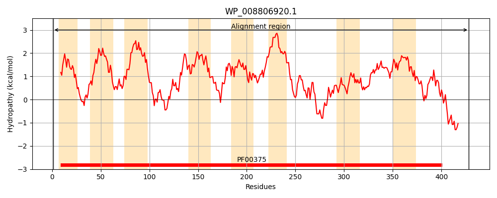
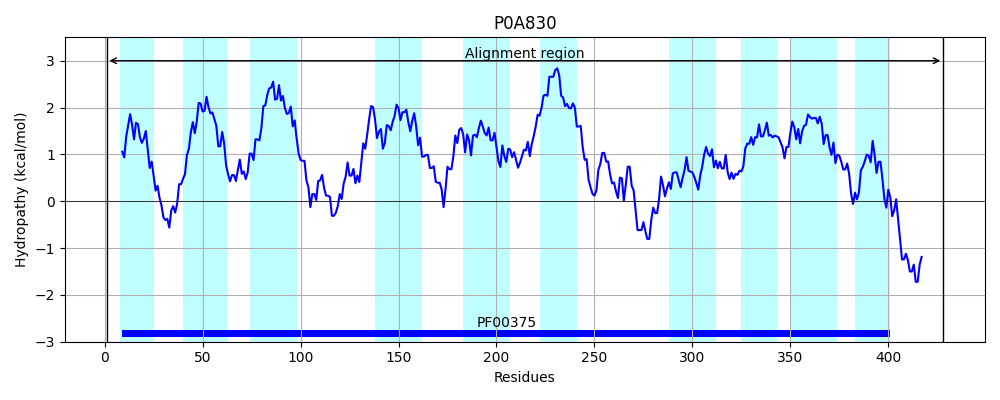
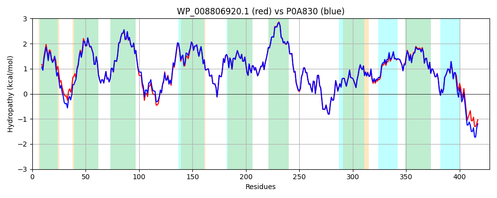

Hit Accession: P0A830
Hit TCID: 2.A.23.1.7
Hit Description: gnl|BL_ORD_ID|8614 gnl|TC-DB|P0A830|2.A.23.1.7 Aerobic C4-dicarboxylate transport protein OS=Escherichia coli (strain K12) GN=dctA PE=1 SV=1
Mach Len: 428
e:0.000000
Query TMS Count : 8
Hit TMS Count: 10
TMS-Overlap Score: 9.000000
Predicted Substrates:CHEBI:23688;dicarboxylic acid dianion
BLAST Alignment:
Score: 1996 , Bit scores: 773 bits, E-value: 0.0e+00, Alignment length: 428, Percentage identity: 93
Query: 1 MKTSIFKSLYVQVLTAIAIGILLGHFYPELGAQMKPFGDAFVKLIKMVIAPVIFCTVVTGIAGMESMKAVGRTGAVALLYFEVVSTIALIIGLIIVNVVQPGAGMNVDPSTLDAKAVAVYAEQAKDQGVVAFLLDVIPGSVIGAFASGNILQVLLFAVLFGFALHRLGSKGQLIFNVIESFSQVIFGIINMIMRLAPIGAFGAMAFTIGKYGVGTLVQLGQLIICFYITCILFVVVVLGSIARATGFSIFKFIRYIREELLIVLGTSSSESALPRMLDKMEKLGCRKSVVGLVIPTGYSFNLDGTSIYLTMAAVFIAQATNSHMDIFHQITLLVVLLLSSKGAAGVTGSGFIVLAATISAVGHLPVAGLALILGIDRFMSEARALTNLVGNGVATVVVAKWVKELDAKQMDDVLNNRVPANKSHELSS 428
MKTS+FKSLY QVLTAIAIGILLGHFYPE+G QMKP GD FVKLIKM+IAPVIFCTVVTGIAGMESMKAVGRTGAVALLYFE+VSTIALIIGLIIVNVVQPGAGMNVDP+TLDAKAVAVYA+QAKDQG+VAF++DVIP SVIGAFASGNILQVLLFAVLFGFALHRLGSKGQLIFNVIESFSQVIFGIINMIMRLAPIGAFGAMAFTIGKYGVGTLVQLGQLIICFYITCILFVV+VLGSIA+ATGFSIFKFIRYIREELLIVLGTSSSESALPRMLDKMEKLGCRKSVVGLVIPTGYSFNLDGTSIYLTMAAVFIAQATNS MDI HQITLL+VLLLSSKGAAGVTGSGFIVLAAT+SAVGHLPVAGLALILGIDRFMSEARALTNLVGNGVAT+VVAKWVKELD K++DDVLNNR P K+HELSS
Sbjct: 1 MKTSLFKSLYFQVLTAIAIGILLGHFYPEIGEQMKPLGDGFVKLIKMIIAPVIFCTVVTGIAGMESMKAVGRTGAVALLYFEIVSTIALIIGLIIVNVVQPGAGMNVDPATLDAKAVAVYADQAKDQGIVAFIMDVIPASVIGAFASGNILQVLLFAVLFGFALHRLGSKGQLIFNVIESFSQVIFGIINMIMRLAPIGAFGAMAFTIGKYGVGTLVQLGQLIICFYITCILFVVLVLGSIAKATGFSIFKFIRYIREELLIVLGTSSSESALPRMLDKMEKLGCRKSVVGLVIPTGYSFNLDGTSIYLTMAAVFIAQATNSQMDIVHQITLLIVLLLSSKGAAGVTGSGFIVLAATLSAVGHLPVAGLALILGIDRFMSEARALTNLVGNGVATIVVAKWVKELDHKKLDDVLNNRAPDGKTHELSS 428 | Protein Hydropathy Plots: |
|---|
|  |  |
Pairwise Alignment-Hydropathy Plot:
|
|---|
|  |